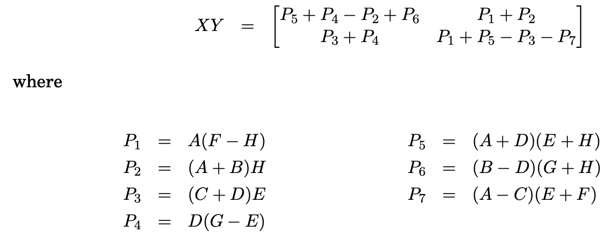

2 Divide and Conquer
2.1 technique definition (no problem/solution required)
Divide-and-conquer algorithms often follow a generic pattern: they tackle a problem of size n by recursively solving, say, a subproblems of size n/b and then combining these answers in O(nd) time, for some a, b, d > 0 (in the multiplication algorithm, a = 3, b = 2, and d = 1). Their running time can therefore be captured by the equation T (n) = aT (⌈n/b⌉) + O(nd).
• Small(P) is a Boolean function that determines whether the input size is small enough that the answer can be computed without splitting
exercise:
You are given an integer array nums with no duplicates. A maximum binary tree can be built recursively from nums using the following algorithm:
solution:
# Definition for a binary tree node. # class TreeNode: # def __init__(self, val=0, left=None, right=None): # self.val = val # self.left = left # self.right = right class Solution: def constructMaximumBinaryTree(self, nums: List[int]) -> TreeNode: if not nums: return n = len(nums) if n == 1: return TreeNode(nums[0]) max_v = max(nums) idx = nums.index(max_v) root = TreeNode(max_v) root.left = self.constructMaximumBinaryTree(nums[:idx]) root.right = self.constructMaximumBinaryTree(nums[idx+1:]) return root
def power(n, p): if p == 0: return 1 if p == 1: return n else: return power(n, np.floor(p/2))*power(n, p-np.floor(p/2))

The new running time is
a =7 b =2,
T(n)=O(n ^ )
exercise:
Develop the function of matrix multiplication.
solution:
import numpy as np def split(matrix): row, col = matrix.shape row2, col2 = row//2, col//2 return matrix[:row2, :col2], matrix[:row2, col2:], matrix[row2:, :col2], matrix[row2:, col2:] def strassen(x, y): if len(x) == 1: return x * y a, b, c, d = split(x) e, f, g, h = split(y) p1 = strassen(a, f - h) p2 = strassen(a + b, h) p3 = strassen(c + d, e) p4 = strassen(d, g - e) p5 = strassen(a + d, e + h) p6 = strassen(b - d, g + h) p7 = strassen(a - c, e + f) c11 = p5 + p4 - p2 + p6 c12 = p1 + p2 c21 = p3 + p4 c22 = p1 + p5 - p3 - p7 c = np.vstack((np.hstack((c11, c12)), np.hstack((c21, c22)))) return c
2.3 divide and conquer algorithmic design
Control abstraction for the divide and conquer strategy
Algorithm DAndC(P) if Small(P) then return S(P); else divide P into smaller instances P1,P2,P3----Pk, k≥1; Apply DAndC to each of these subproblems; return Combine(DAndC(P1),DAndC(P2)----,DAndC(pk)); } }
exercise:
Given an integer array nums, find the contiguous subarray (containing at least one number) which has the largest sum and return its sum.
A subarray is a contiguous part of an array.
example1
Input: nums = [-2,1,-3,4,-1,2,1,-5,4]
Output: 6
Explanation: [4,-1,2,1] has the largest sum = 6.
Example 2:
Input: nums = [1]
Output: 1
Example 3:
Input: nums = [5,4,-1,7,8]
Output: 23
solution:
class Solution: def maxSubArray(self, nums: List[int]) -> int: n = len(nums) if n == 1: return nums[0] else: max_left = self.maxSubArray(nums[0:len(nums) // 2]) max_right = self.maxSubArray(nums[len(nums) // 2:len(nums)]) max_l = nums[len(nums) // 2 - 1] tmp = 0 for i in range(len(nums) // 2 - 1, -1, -1): tmp += nums[i] max_l = max(tmp, max_l) max_r = nums[len(nums) // 2] tmp = 0 for i in range(len(nums) // 2, len(nums)): tmp += nums[i] max_r = max(tmp, max_r) return max(max_right,max_left,max_l+max_r)